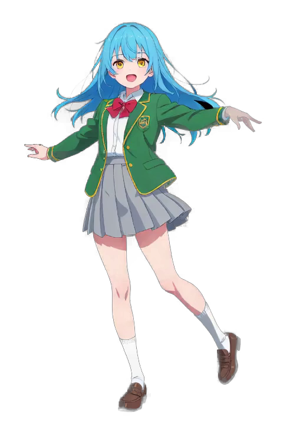

Simply by combining cam footage with a transparent animated WebP generated by Stable Diffusion and Wan Video, XR (Extended Reality) can be achieved.
AR1
LR1 Stereogram(parallel)
RL1 Stereogram(cross-eyed)>
AR2
LR2 Stereogram(parallel)
RL2 Stereogram(cross-eyed)>
